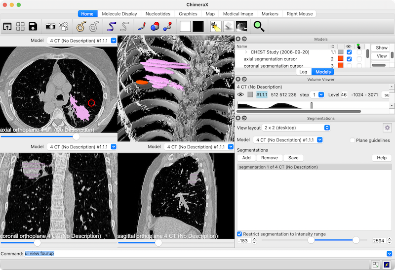

|  |
| Chest CT dataset with several axial slices segmented |
The Segmentations tool allows interactive manual segmentation of medical images and other volume data plane by plane, or with a spherical cursor in the 3D view or in virtual reality. Segmentations are additional volume models displayed as surfaces that delineate regions of arbitrary shape within the image dataset; for medical images, they typically represent anatomic structures or lesions such as tumors. Multiple segmentation models can be defined from the same image dataset.
For semiautomated segmentation of cryo-electron microscopy density maps, see the Segment Map tool instead.
The Segmentations tool can be started from the
Volume Data section of the Tools menu (more...). Some of its functions are also implemented as the
segmentations command.
See also: Download DICOM, Volume Viewer, Map Eraser, color zone, volume mask, segmentation,
DICOM segmentation tutorial, ChimeraX DICOM Reference,
Medical Image toolbar
icons:


Starting the Segmentations tool automatically sets the view layout according to the tool's General settings. See also: ui view
The View layout can be switched among:
The Model of interest (the medical image to segment and thus to show in the slice views) should be chosen from the list of currently open models. Choosing a different model does not change the 3D view; models can be shown/hidden there using any of the usual mechanisms, namely the Model Panel and/or show/hide commands.
The Plane guidelines option controls whether each slice view should contain crosshairs showing the positions of the other slice views.
The Restrict segmentation to intensity range option allows limiting the range of data values that can be added to a segmentation model during interactive editing; only those pixels with data values within the specified range will be added even when a larger area is swept out by the segmentation cursor.
The thresholds of each view (how values map to intensities) can be adjusted interactively in the Volume Viewer tool.
Segmentation models (if any) are listed in the dialog. Clicking Add creates a new segmentation model, and any segmentation in the list can be can be chosen (highlighted) with the mouse. The currently highlighted segmentation is the one that will be populated using the segmentation cursor in the slice views. See slice navigation for how to scroll through, zoom, and translate the slice views. Clicking Remove deletes the chosen segmentation, whereas Save brings up a dialog for saving the segmentation to a file. If the DICOM file type is chosen, the segmentation is saved as the SEG modality with the associated metadata, if any. Other medical-image formats (NIfTI, NRRD) will not include the metadata.
In the slice views, the segmentation cursor is shown as a red circle; left mouse click-drag sweeps out an area in the currently displayed data plane, whereas additionally pressing Shift erases the corresponding area from the segmentation. Shift-scroll adjusts the segmentation cursor size. The area swept out by the segmentation cursor in a slice view will be added to the current segmentation, unless further restricted by intensity range. These slice-view mouse mode assignments are listed in the Mouse (2D Slices) settings but cannot be changed currently.
Segmentations can also be edited in the desktop 3D view according to the Mouse (3D) settings and in virtual reality according to the VR Controller settings
Clicking Help opens this page in the Help Viewer.
Choosing Settings... from the Segmentations context menu or clicking the “gear” icon near the top right corner of the Segmentations dialog shows its settings in a separate window, with sections:
The settings window can be manipulated like other panels in the ChimeraX interface (more...).
Save saves the current settings as preferences, Reset replaces the current settings with the initial “factory” defaults, and Restore restores values that were saved previously.
← General – tool-associated graphics window and device behaviors
← Mouse (2D Slices) – mouse assignments in the axial, coronal, and sagittal slice views.
←
Mouse (3D)
– mouse assignments in the desktop 3D view when the
General option to
Set 3D mouse modes... is on and the desktop 3D-only
layout is chosen. These assignments can be toggled
on/off with the
Medical Image toolbar
icon
 , where the “off” state restores the previous assignments.
, where the “off” state restores the previous assignments.
←
VR Controller
– assignments to the right hand controller when the
General option to
Set VR controller modes... is on and the VR 3D-only
layout is chosen. These assignments can be toggled
on/off with the
Medical Image toolbar
icon
 , where the “off” state restores the previous assignments.
, where the “off” state restores the previous assignments.
{kind=link}